This article draws familiar charts and solid geometry from small datasets. Each example gives the data and the code that draws it. Choosing layers for observations and grids explains the data layers, and Drawing arrows and streamlines develops the streamtube example. Installation is covered in Get started. Preparing data for 3D layers shows how to organise your own input tables.
Domain recipes
Drawing tensor glyphs draw symmetric tensors as ellipsoids or superquadrics. Drawing ordination biplots combine site scores, variable arrows and group regions. Drawing molecular structures draw atoms and bonds from bio3d records. Plotting colour gamuts in Lab coordinates place sampled colours and their convex hull in Lab coordinates.
Parametric curves
Sample a curve in row order and sweep a circular cross-section along
it to give it thickness. The trefoil knot below is traced by three sine
and cosine terms in a parameter t from 0 to 2π. The closed
tube joins its last cross-section to its first.
t <- seq(0, 2 * pi, length.out = 121)[-121]
knot <- data.frame(x = sin(t) + 2 * sin(2 * t),
y = cos(t) - 2 * cos(2 * t),
z = -sin(3 * t))
ggplot(knot, aes(x, y, z = z)) +
geom_tube_3d(radius = 0.16, sides = 10, closed = TRUE, fill = "#2E6F9E") +
coord_3d(aspect = "data")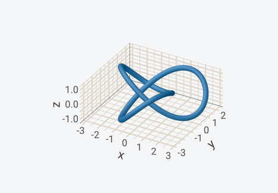
At each of the three crossings, the strand nearer the camera is drawn over the other. Building surfaces and solids shows ribbons and custom cross-sections along curves.
Solid violins
The iris data record flower measurements in centimetres for three species. Revolve each species’ estimated petal-length density around a vertical axis. The width changes along that axis with the density, giving each species a solid violin.
ggplot(iris, aes(Species, y = 0, z = Petal.Length, fill = Species)) +
geom_violin_3d(shape = "revolve", n = 40, sides = 16) +
scale_y_continuous(limits = c(-1, 1), breaks = NULL, name = NULL) +
scale_fill_manual(values = c("#2E6F9E", "#9E5E0F", "#2A7A7A")) +
coord_3d(elevation = 20)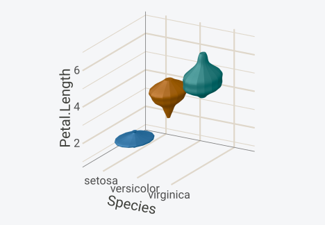
Covariance ellipsoids
Three measurements place each iris flower in space. Estimate a normal covariance ellipsoid for each species to show the direction and extent of its spread. Translucent faces reveal the points and principal axes.
ggplot(iris, aes(Sepal.Length, Sepal.Width, z = Petal.Length,
colour = Species, fill = Species)) +
stat_ellipsoid_3d(type = "norm", kind = "data", alpha = 0.2,
axes = TRUE, detail = 2) +
geom_point_3d(size = 1) +
scale_fill_manual(values = c("#2E6F9E", "#9E5E0F", "#2A7A7A")) +
scale_colour_manual(values = c("#2E6F9E", "#9E5E0F", "#2A7A7A")) +
coord_3d(azimuth = -45, elevation = 25)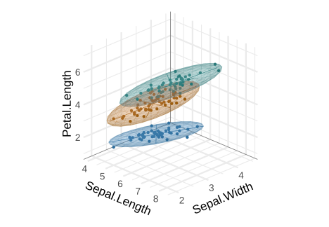
The data ellipsoids describe variation among flowers. Confidence ellipsoids for the species means use the standard-error kind, as shown in Building surfaces and solids.
Streamtubes
A rotating vector field with a positive vertical component produces rising helices. Integrate from three seeds at different radii, then give each curve a circular cross-section. Fill represents the vector magnitude along each tube.
field <- expand.grid(x = seq(-1, 1, length.out = 5),
y = seq(-1, 1, length.out = 5), z = c(-1, 0, 1))
field <- transform(field, u = -y, v = x, w = 0.2)
seeds <- rbind(c(0.3, 0, -0.8), c(0.55, 0, -0.8), c(0.8, 0, -0.8))
ggplot(field, aes(x, y, z = z, u = u, v = v, w = w)) +
stat_streamline_3d(aes(fill = after_stat(norm)), seeds = seeds,
geom = "tube", direction = "forward", step = 0.1, max_steps = 80,
radius = 0.035, sides = 8, cap = "flat", colour = NA) +
scale_fill_gradient(low = "#2E6F9E", high = "#9E5E0F") +
coord_3d(aspect = "data")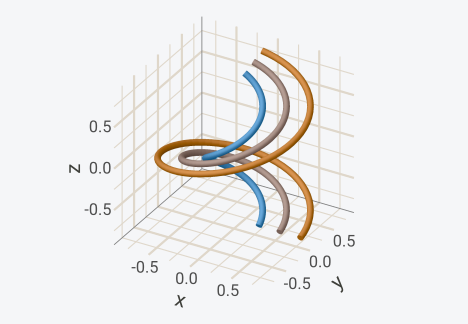
A capped cutaway
Subtract a smaller sphere from a larger one to make a hollow shell. A clipping plane removes the half at positive x. Capping closes the cut with an annulus and preserves the inner cavity.
shell <- sdf_sphere(radius = 1) - sdf_sphere(radius = 0.65)
ggplot() + geom_isofunction_3d(fun = shell, n = 24, fill = "#2A7A7A") +
xlim(-1.1, 1.1) + ylim(-1.1, 1.1) + zlim(-1.1, 1.1) +
coord_3d(aspect = "data", azimuth = -30,
clip_planes = list(clip_plane_3d(c(-1, 0, 0), c(x = 0), cap = TRUE)))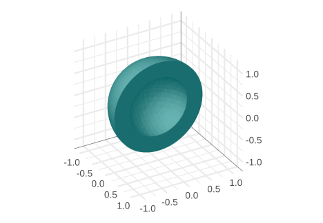
Constructing and reconstructing surfaces shows how to construct shapes from functions and reconstruct them from point samples.
Functions of two variables
geom_function() draws a function of x as a line.
geom_function_3d() samples a function of x and y on a grid
and draws the result as a surface. The x and y limits set the sampling
range, and n sets the number of grid points along each
axis. The function below is the radial sinc, sin(r)/r, where r is the
distance from the origin.
sinc <- function(x, y) {
r <- sqrt(x^2 + y^2)
sin(r) / r
}
ggplot() +
geom_function_3d(aes(fill = after_stat(z_mean)), fun = sinc, n = 40) +
xlim(-10, 10) + ylim(-10, 10) +
scale_fill_gradient(low = "#DCEAF3", high = "#2E6F9E") +
coord_3d()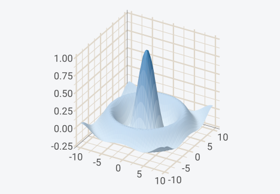
The fill maps z_mean, the mean height of each triangle,
so the ripples are distinguished by shade as well as by position.
Bézier curves
A cubic Bézier curve is defined by four control points P0 to P3. For a parameter s from 0 to 1, the curve passes through (1 - s)^3 P0 + 3s(1 - s)^2 P1 + 3s^2(1 - s) P2 + s^3 P3. It starts at P0 and ends at P3; P1 and P2 pull it towards them without lying on it. Write the four weights as columns of a matrix and multiply by the control points to get the sampled curve.
ctrl <- data.frame(x = c(0, 1, 3, 4), y = c(0, 3, -1, 2),
z = c(0, 3, 3, 0))
s <- seq(0, 1, length.out = 100)
weights <- cbind((1 - s)^3, 3 * s * (1 - s)^2, 3 * s^2 * (1 - s), s^3)
bezier <- as.data.frame(weights %*% as.matrix(ctrl))
head(bezier, 3)
#> x y z
#> 1 0.00000000 0.00000000 0.00000000
#> 2 0.03060706 0.08878088 0.08999082
#> 3 0.06181394 0.17336306 0.17814509In two dimensions the sampled points would go to
geom_path(). Here the curve is a
geom_path_3d() layer, and the control polygon is a dashed
path through the control points.
ggplot(bezier, aes(x, y, z = z)) +
geom_path_3d(data = ctrl, linetype = "dashed", colour = "#5C6166") +
geom_point_3d(data = ctrl, size = 3, colour = "#5C6166") +
geom_path_3d(linewidth = 1.2, colour = "#2E6F9E") +
coord_3d()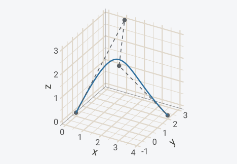
The curve touches the polygon only at its two end points, and it leaves each end along the polygon’s first and last edge.
Bivariate histograms
geom_bin_2d() counts observations in rectangular cells
of two continuous variables and shows each count as a fill colour. In
three dimensions the count becomes the height of a column. The
faithful data record the duration of 272 eruptions of the
Old Faithful geyser and the waiting time before each, both in minutes.
geom_histogram_3d() assigns each eruption to a cell 0.5
minutes wide in duration and 5 minutes wide in waiting time, counts the
eruptions in each cell and draws one column per occupied cell;
neighbouring columns touch, as histogram bars do.
ggplot(faithful, aes(eruptions, waiting)) +
geom_histogram_3d(binwidth = c(0.5, 5), fill = "#2E6F9E") +
labs(x = "duration", z = "count") +
coord_3d()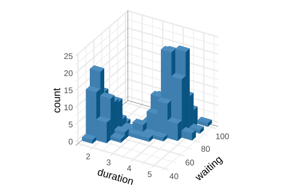
The two clusters are the short eruptions after waits of about 50 minutes and the long eruptions after waits of about 80 minutes.
Grouped bar charts
geom_col(position = "dodge") places the bars of a second
grouping variable side by side within each x category. In three
dimensions the second variable takes the y axis. Compute the median
price of the diamonds in each combination of cut grade and four of the
seven colour grades, from D (colourless) to J.
some_colours <- subset(diamonds, color %in% c("D", "F", "H", "J"))
some_colours$color <- droplevels(some_colours$color)
prices <- aggregate(price ~ cut + color, data = some_colours,
FUN = median)
head(prices, 3)
#> cut color price
#> 1 Fair D 3730.0
#> 2 Good D 2728.5
#> 3 Very Good D 2310.0Both factors map to position directly, and the median price maps to z. The x axis has room for only some of the five cut names, so the fill repeats the cut grade with a legend.
ggplot(prices, aes(cut, color, z = price, fill = cut)) +
geom_col_3d() +
scale_x_discrete(breaks = c("Fair", "Very Good", "Ideal")) +
scale_fill_manual(values = c("#2E6F9E", "#B5342B", "#3F7A3D", "#9E5E0F", "#7A4F9E")) +
coord_3d() +
theme(legend.position = "right")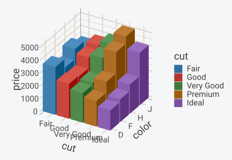
For the Very Good, Premium and Ideal cuts, the median price rises from colour D to colour J. The Fair and Good cuts have a higher median at D than at F.
Pie charts
A ggplot2 pie chart is a stacked bar in
coord_polar(theta = "y"). In three dimensions each slice is
a wedge polygon raised to a common height with
geom_extrude_3d(). The data give the share of each cut
grade among all diamonds; each wedge spans an angle proportional to its
share, sampled at 40 points on its arc.
share <- prop.table(table(diamonds$cut))
edges <- c(0, cumsum(share)) * 2 * pi
wedges <- do.call(rbind, lapply(seq_along(share), function(i) {
arc <- seq(edges[i], edges[i + 1], length.out = 40)
data.frame(cut = names(share)[i], x = c(0, cos(arc)), y = c(0, sin(arc)))
}))
round(share, 2)
#>
#> Fair Good Very Good Premium Ideal
#> 0.03 0.09 0.22 0.26 0.40Each wedge starts at the centre and runs along its arc;
group = cut keeps the five polygons apart. The extrusion
height is a constant z, and the aspect flattens the
disc.
wedges$cut <- factor(wedges$cut, levels = names(share))
ggplot(wedges, aes(x, y, z = 0.2, group = cut, fill = cut)) +
geom_extrude_3d() +
scale_fill_manual(values = c("#2E6F9E", "#B5342B", "#3F7A3D", "#9E5E0F", "#7A4F9E")) +
coord_3d(aspect = c(1, 1, 0.2), elevation = 35, axes = character(),
panes = character(), box = "none") +
theme(legend.position = "right")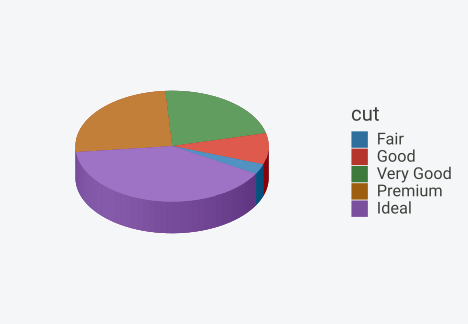
Ideal diamonds make up 40% of the data and Fair diamonds 3%. The walls are lit by their angle to the light, so the front of the disc is darker than the top.
Several series over time
A line chart of several series maps time to x and each series to a
colour (geom_line(aes(colour = variable))). In three
dimensions each series gets its own position on y. A wall runs from zero
up to its value. economics_long holds monthly US economic
series in long format, with value01 rescaled to run from 0
to 1 in each series. Three of them are used here: the personal savings
rate, the median duration of unemployment and the number of
unemployed.
econ <- subset(economics_long,
variable %in% c("psavert", "uempmed", "unemploy"))
econ$series <- match(econ$variable, c("psavert", "uempmed", "unemploy"))
range(econ$value01)
#> [1] 0 1geom_band_3d() with zmin and
zmax mapped draws a vertical wall along the x/y path of
each group. The y axis labels as many series names as fit along its
edge, and the legend names all three.
ggplot(econ, aes(date, series, zmin = 0, zmax = value01,
group = variable, fill = variable)) +
geom_band_3d() +
scale_y_continuous(breaks = 1:3,
labels = c("psavert", "uempmed", "unemploy")) +
scale_fill_manual(values = c("#2E6F9E", "#9E5E0F", "#2A7A7A")) +
coord_3d(azimuth = -50, aspect = c(1.6, 1, 0.8)) +
theme(legend.position = "right")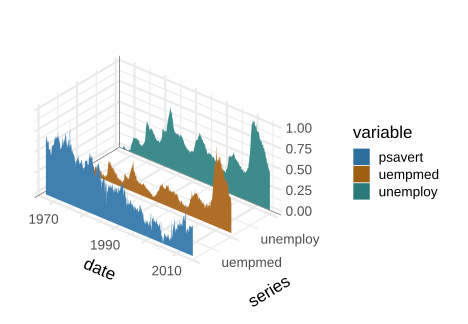
Both unemployment series reach their highest values in 2009 and 2010. The savings rate falls from above 12% in the early 1970s to its lowest value in 2005.
Scatter plots with a fitted surface
geom_smooth() fits y as a function of x and draws the
fitted line over the points. geom_smooth_3d() fits z as a
function of x and y and draws the fitted surface. Here the
mtcars fuel consumption (mpg, miles per
gallon) is modelled by weight (wt, in 1,000 lb) and gross
horsepower (hp). The formula uses the names x, y and z for
the mapped variables and adds a quadratic term in weight.
ggplot(mtcars, aes(wt, hp, z = mpg)) +
geom_smooth_3d(method = "lm", formula = z ~ x + I(x^2) + y,
n = 20, fill = "#2E6F9E") +
geom_point_3d(size = 2.5, colour = "#B5342B") +
coord_3d()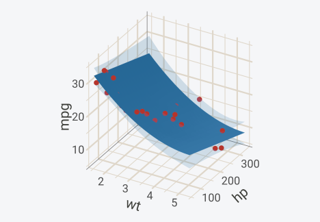
The pale surfaces above and below the fit are the pointwise 95%
confidence bounds for the mean, the counterpart of the grey ribbon
around geom_smooth(). Points below the fitted surface are
hidden by it.
Two-dimensional densities
geom_density_2d() draws contour lines of a bivariate
kernel density estimate. stat_density_2d_3d() computes the
same kind of estimate and draws the density as height. The sample below
holds 2,000 diamonds under 2.5 carats, with price on a log10 scale.
set.seed(1)
small <- subset(diamonds, carat < 2.5)
small <- small[sample(nrow(small), 2000), ]
ggplot(small, aes(carat, log10(price))) +
stat_density_2d_3d(aes(fill = after_stat(density)), n = 40) +
scale_fill_gradient(low = "#DCEAF3", high = "#2E6F9E") +
coord_3d()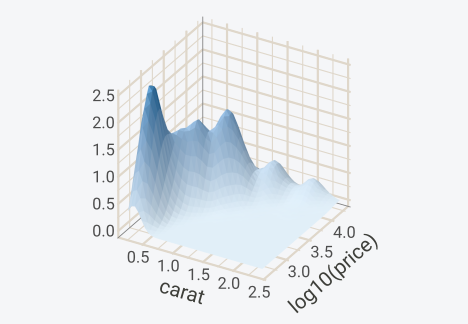
The peaks follow a ridge that rises in price with carat. They sit just above 0.3, 0.7, 1 and 1.5 carats, where the sample holds more stones than at neighbouring weights.
Contour lines
geom_contour() draws the lines where a gridded height
crosses a set of levels. geom_contour_3d() draws the same
lines on the surface, each at the height of its level.
volcano holds heights in metres of Maunga Whau on a 10 m
grid, 87 rows by 61 columns.
heights <- data.frame(x = rep(seq_len(nrow(volcano)), ncol(volcano)),
y = rep(seq_len(ncol(volcano)), each = nrow(volcano)),
z = as.vector(volcano))
range(heights$z)
#> [1] 94 195A grey surface carries the lines, drawn every 10 m and coloured by level.
ggplot(heights, aes(x, y, z = z)) +
geom_surface_3d(fill = "grey80", colour = NA) +
geom_contour_3d(aes(colour = after_stat(level)), binwidth = 10,
linewidth = 0.6) +
scale_colour_gradient(low = "#2E6F9E", high = "#B5342B") +
coord_3d(azimuth = -40, elevation = 40, aspect = c(1.4, 1, 0.6))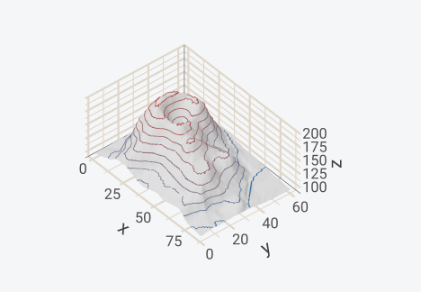
The lines close round the summit and the crater rim. Lines on the far
slope are hidden where the near slope covers them. ggplot2’s own
geom_contour() also works inside coord_3d(),
drawing each line at its level without the surface.
Filled contour terraces
ggplot2’s filled contour layer divides the volcano heights into bands. Adding the 3D coordinate system raises each band to its level midpoint, producing horizontal terraces with the original band colours.
ggplot(heights, aes(x, y, z = z)) +
geom_contour_filled(bins = 6, colour = "white", linewidth = 0.15) +
scale_fill_manual(values = c("#2E6F9E", "#B5342B", "#3F7A3D", "#9E5E0F", "#7A4F9E",
"#2A7A7A")) +
coord_3d(azimuth = -40, elevation = 40, aspect = c(1.4, 1, 0.6))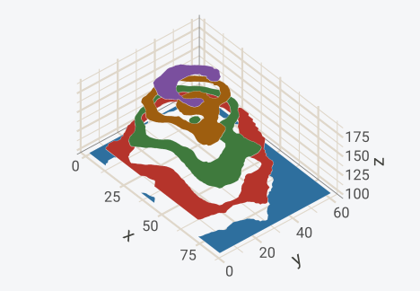
Combining 2D and 3D graphics shows terraced bands and contour maps placed on the floor below a surface.
Where next
Choosing layers for observations and grids and Building surfaces and solids: a minimal example of every geom and stat.
Choosing camera views: change the viewing angles used above.
How overlapping geometry is drawn: how overlapping geometry is ordered.